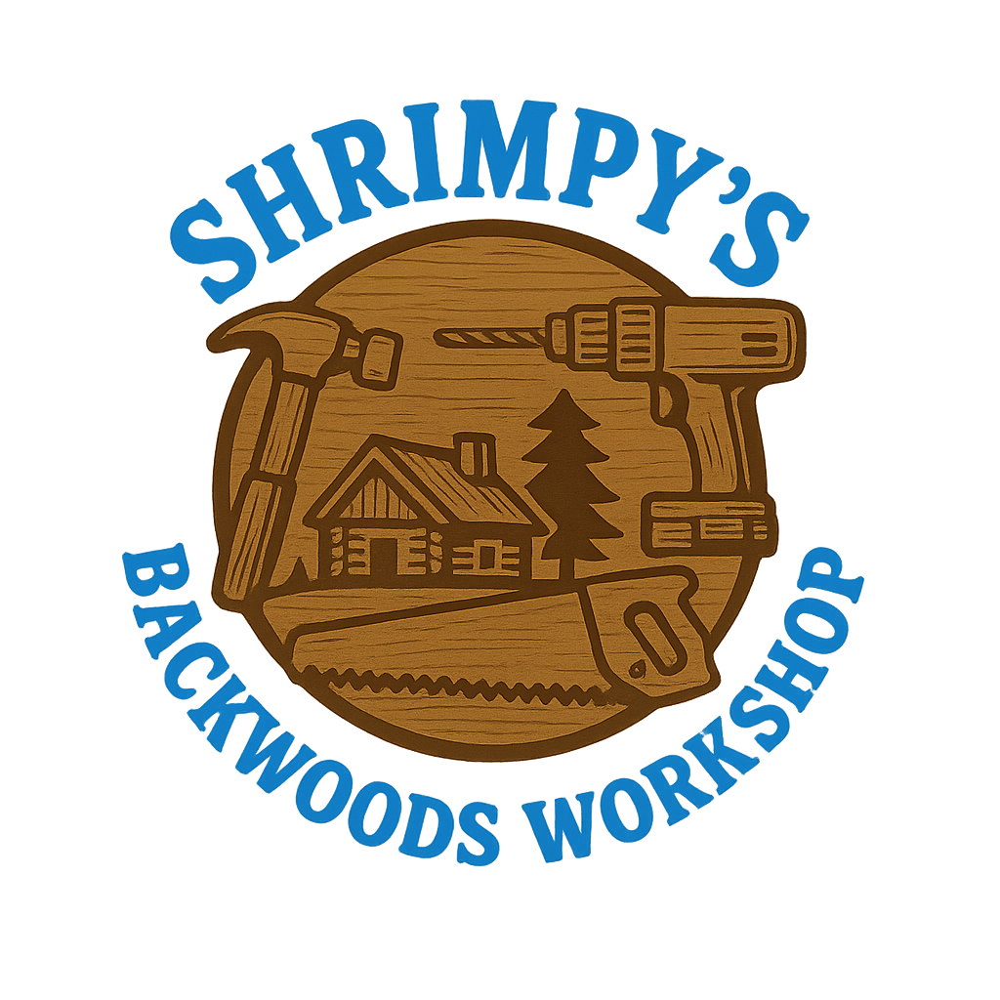

Welcome to Shrimpy's Backwoods Workshop
Shrimpy’s Backwoods Workshop is your trusted destination for handcrafted custom woodwork, precision laser engraving, and innovative 3D printing. Nestled away in the backwoods, we combine traditional craftsmanship with modern technology to create unique, personalized furniture, decor, gifts, and accessories. Every piece is built with care and attention to detail, designed to bring warmth, character, and functionality to your home or business. Whether you're looking for a one-of-a-kind wood creation, finely engraved keepsakes, or custom 3D printed items, Shrimpy’s Backwoods Workshop delivers quality, creativity, and a touch of rustic charm.
